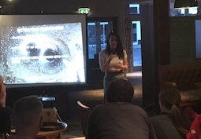
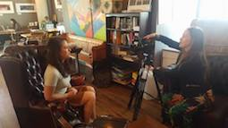

Pint of science 2017 was a fantastic experience! I was delighted to be invited to speak again after my first ever Pint of Science in 2016. This year I gave a talk on the recent gravitational wave detections and the surprise discoveries scientists have made so far. You can read the full description here.

This year I also helped out with publicising the event with local tv station That's Solent TV and BBC radio solent. You can watch and listen to the interviews by clicking the links on my homepage.